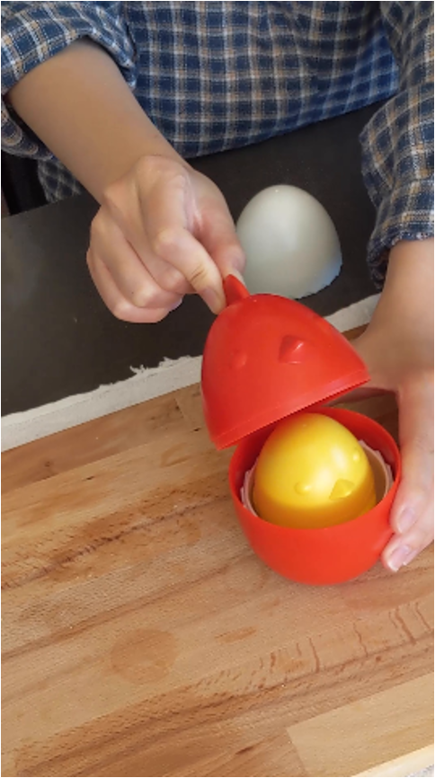
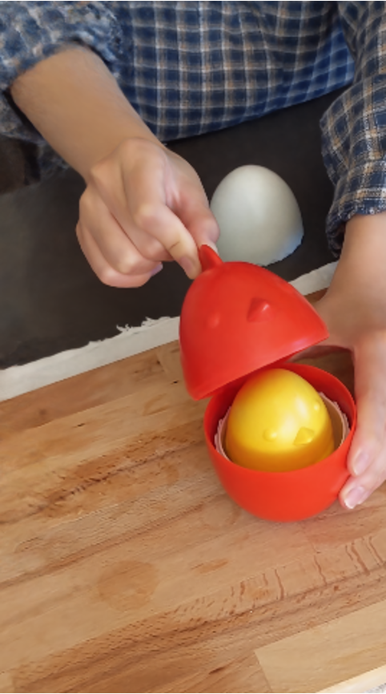
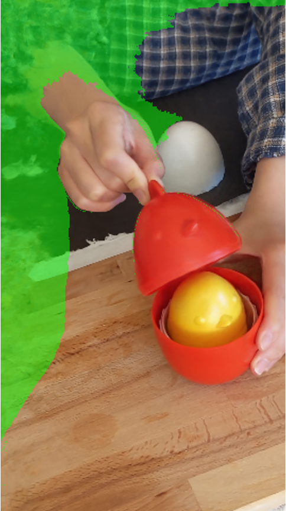
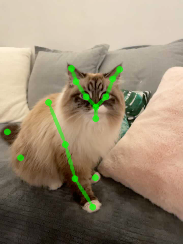
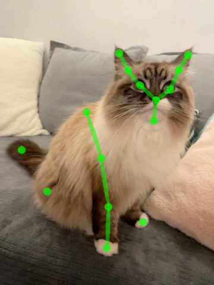
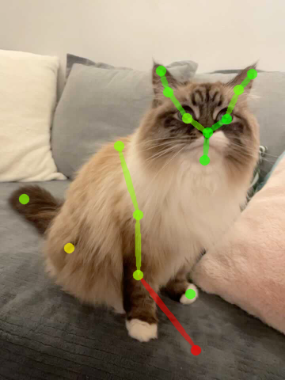
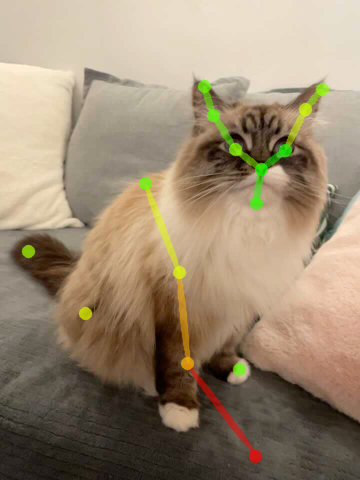
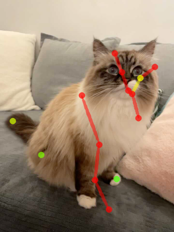

Monocular Dynamic View Synthesis
A Reality Check
Overview Video
Effective Multi-view
A monocular video contains effective multi-view cues when the camera moves much faster than the scene, even though the underlying scene is observed only once at each time step.
Quantifying Effective Multi-view
We propose to quantify the amount of effective multi-view signal present in a monocular capture based on effective multi-view factors (EMFs). Through EMFs, we find that the existing datasets have magnitude larger multi-view cues comparing to casual captures.
Click below to see the actual captures.
Existing captures contain either teleporting cameras or quasi-static scenes. This has caused a discrepancy from the casual captures from real life. All videos are played with actual frame rate.
Our iPhone dataset consists of 14 casually captured training videos from a hand-held smartphone without camera teleportation. For 7 sequences shown on the top, we provide multi-camera rig validation.
Impact of Effective Multi-view
We compare the existing teleporting setting and our non-teleporting settings.
Our results show that the effective multi-view in the existing experimental protocol inflates the synthesis quality of prior methods, and that truly monocular captures are more challenging.
Interestingly, we have two additional findings. First, the camera teleportation affects the warping-based methods more than plain T-NeRF baseline. Second, although camera teleportation improves rendering quality for each frame, it also makes the rendering more temporally jittering -- a phenomenon not captured in current evaluation.
Towards better experimentation practice
Monocular dynamic view synthesis is difficult to evaluate due to occlusion as NeRF cannot predict what it has not observed. This is an issue that existing methods get around by camera teleportation. We recommand future works to evaluate on co-visible pixels when experimenting with casual captures. We provide code snippets for computing co-visibility and masked image metrics.
|  |  |

|
 |
| Test view | Prediction (w/ tele.) | Prediction (w/o tele.) | Prediction (w/o tele. w/ mask) |
Good dynamic view synthesis quality does not necessarily mean good correspondence which directly reflects the quality of deformation modeling. We recommand future works to evaluate correspondence by keypoint transferring. We provide code snippets to readout correspondence and annotation tools for keypoint labeling.
|  |  |  |  |  |
| Source kpt. | Target kpt. | Nerfies | HyperNeRF | NSFF |
Reality Check without Effective Multi-view
The state-of-the-art methods struggle in modeling acurrate shape of moving objects. We also find that the baseline time-conditioned NeRF (T-NeRF; in the first column) is quite competitive in this setting.
We find that existing approaches perform poorly (mPSNR: 14-16 dB) out-of-the-box on the proposed iPhone dataset with more diverse and complex real-life motions.
We explored incorporating additional regularizations from recent advances in neural rendering, including background augmentation, depth supervision, and sparsity regularization. We denote the methods with these enhancements as their "++" version. Even though the results get much better, there is still a large room for improvement.
Citation
@inproceedings{gao2022dynamic,
title={Monocular Dynamic View Synthesis: A Reality Check},
author={Gao, Hang and Li, Ruilong and Tulsiani, Shubham and Russell, Bryan and Kanazawa, Angjoo},
booktitle={NeurIPS},
year={2022},
}
Acknowledgement
We would like to thank Zhengqi Li and Keunhong Park for valuable feedback and discussions; Matthew Tancik and Ethan Weber for proofreading. We are also grateful to our pets: Sriracha, Haru, and Mochi, for being good during capture. This project is generously supported in part by the CONIX Research Center, sponsored by DARPA, as well as the BDD and BAIR sponsors.
Inspired by HumanNeRF